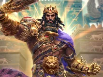
Gilgameshimposée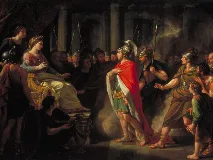
Didonwiki-fr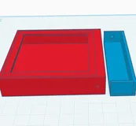
Mardukbing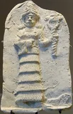
Ishtarwiki-fr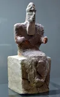
Enlilwiki-fr Anuwiki-fr
Anuwiki-fr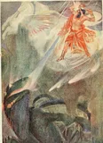
Tiamatwiki-en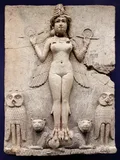
Ereshkigalwiki-fr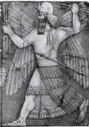
Ninurtawiki-fr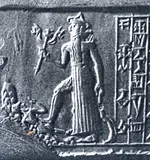
NergalECHEC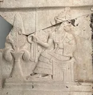
Sinwiki-fr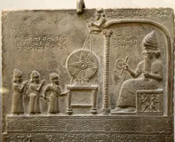
Shamashwiki-fr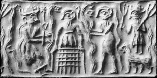
Dumuziwiki-fr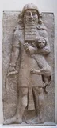
Enkiduwiki-fr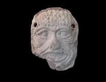
Humbabawiki-fr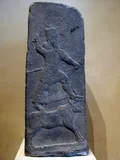
Adadwiki-fr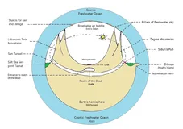
Apsûwiki-fr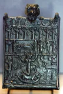
Lamashtuwiki-fr
Ahura Mazdabing
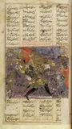
Angra Mainyuwiki-fr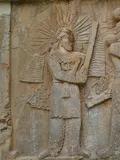
Mithrawiki-fr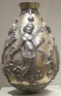
Anahitawiki-fr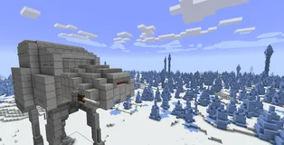
Zurvanbing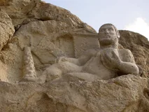
Verethragnawiki-fr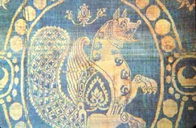
Simurghwiki-fr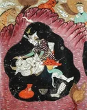
Rostamwiki-fr
Zahhakwiki-fr
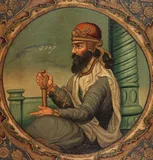
Fereydounwiki-fr
Jamshidbing
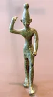
Baalwiki-fr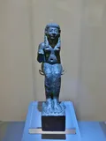
Astartéwiki-fr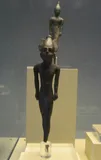
Melqartwiki-fr